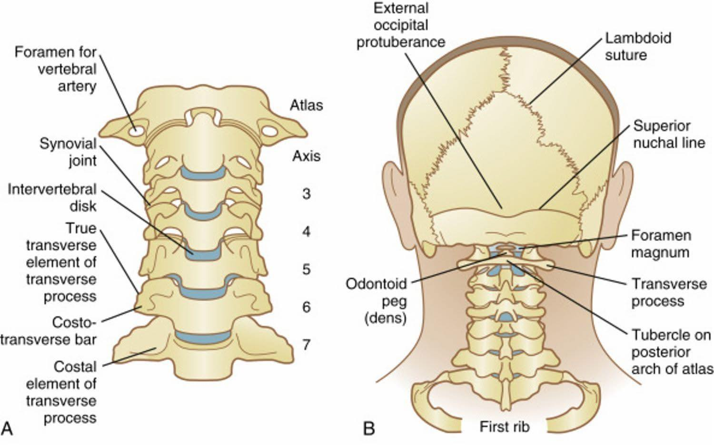

長年頭痛，原來可以看中醫傷科
#長年頭痛，原來可以看中醫傷科！
這是一位準備畢業的老患者今天看診時的驚嘆❗️
故事是這樣的，在治療其沾黏五十肩的療程中，發現有長年頭痛的老毛病，每次只要中午想睡覺時沒有睡覺，到了傍晚或晚上包準痛起來，只要那個fu上來了，就必定會頭痛，就得吃止痛藥壓制然後趕快去睡覺，每次都會痛個3-5天，嚴重一點維持一個禮拜。每週大概都會痛個1-2次。
長年吃中藥調整當然有在進行，固定回診給她的內科醫師調藥也都有進步，但就是無法斷根。 她的內科醫師就告訴她：請妳的傷科醫師幫妳看看，有可能是傷科問題！
於是乎，兩週前的回診，運用徒手與乾針的技術，針對高位頸椎與相關的肌群做處理後，今天回診很高興又很驚訝的說：「醫生，我這兩個禮拜完全沒有頭痛，任何要發作的感覺都沒有！終於可以想睡覺就睡覺，像個正常人一樣！」
這種慢性、長期、反覆的「症頭」，很高比率跟肌筋膜失能有關係，看似是內科問題，但其實是肌筋膜失能所導致的症狀！
確實很多人不知道這個觀念，常誤以為自己的症狀是內科問題，吃了好久的藥但就是無法斷根，這時候就要考慮是不是人體結構問題造成的可能性！
同理可證，反覆傷科性的問題，也有可能就是內科問題造成的影響。畢竟人體就是完整的個體，任何身體、心靈、內科、傷科都會互相影響！
中醫師，具備能同時多角度、廣視野的看待人體與疾病，並且能用藥、用針、用手來三管齊下解決問題，真的是住海邊管很寬啊🤣🤣🤣
#內傷互通 #全人診療
太初中醫診所 東門中醫
中醫師 黃彥鈞
